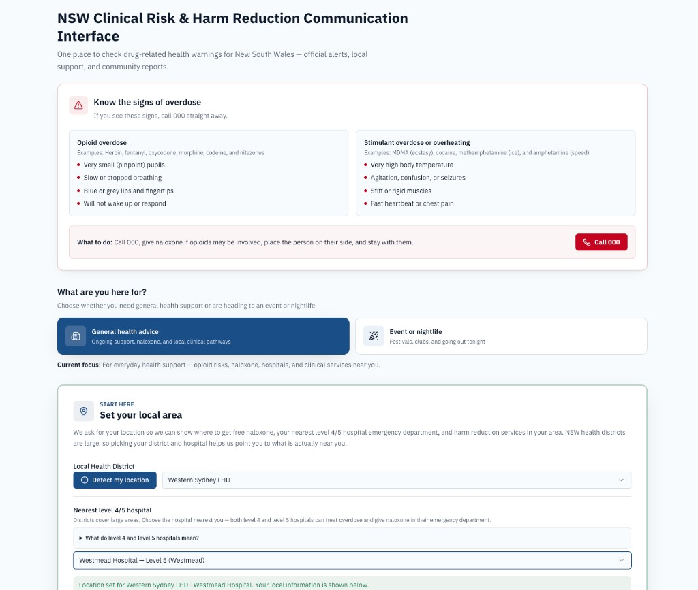
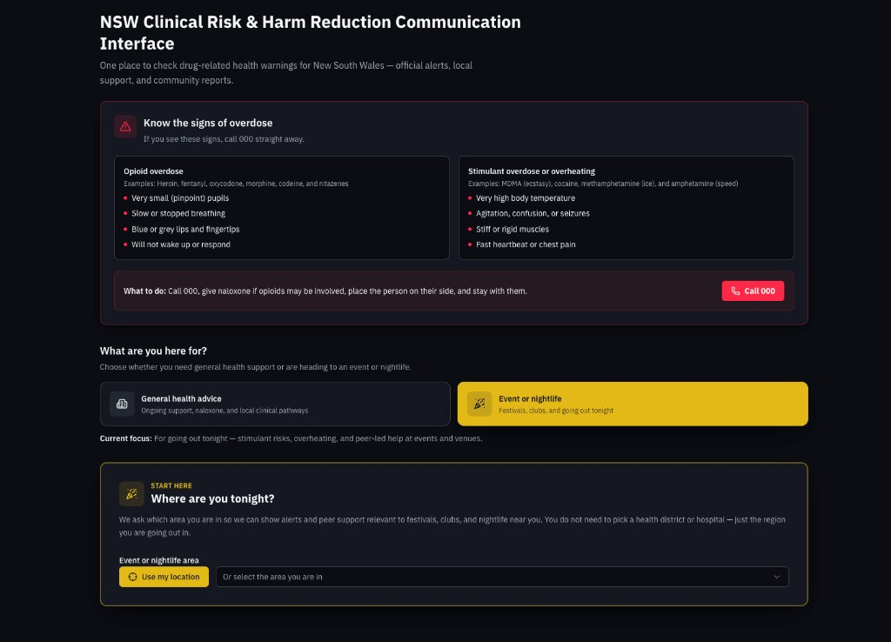
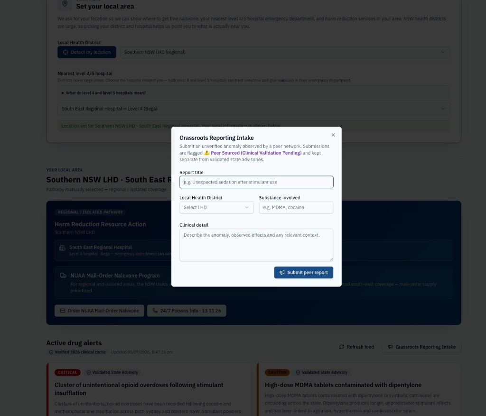
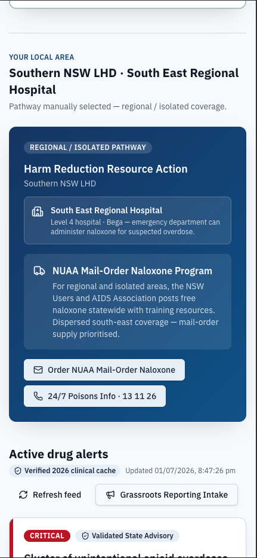
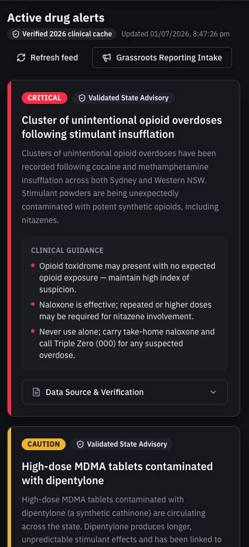

By the time an outreach worker or an event attendee reads about a contaminated batch, the risk has already shifted. Traditional health communication treats every audience the same — but a person visiting a local health hub needs entirely different information than someone at a music festival. This interface closes that gap without sacrificing clinical rigour.
Public health · Harm reduction · 2026
NSW Clinical Risk and Harm Reduction Communication Interface
When a public health agency issues a high-priority drug warning, speed is everything. This responsive web application acts as a real-time, statewide translation tool — turning official epidemiological data into immediate, localized action for outreach workers, clinic staff, and event attendees across New South Wales.
The problem
Crucial safety updates often get trapped in dense government PDFs or slow-moving feeds.
Context matters: two sectors, one system
A single objective toggle splits the entire interface into two distinct modes.
Community and primary health
Built for clinic staff, needle syringe programs, and community outreach teams. Clean, understated design focused on pharmaceutical integrity, synthetic opioids, and long-term healthcare pathways.
Nightlife and major events
One click shifts into high-contrast dark mode tailored for festivals and nightlife. Information priority switches to acute risks — high-dose stimulants, hydration, and onsite peer support care.
Geolocation and smart call-to-actions
An alert is only useful if it tells you exactly what to do next.
Instead of listing a generic phone number, the app uses the browser Geolocation API to identify where the user is across NSW. Users who opt out can select their Local Health District from a dropdown, then choose a level 4 or 5 hospital for more precise local guidance.
Once the region is known, the primary call-to-action card changes dynamically. Metropolitan users see directions to the nearest public health centre or a participating pharmacy offering free Take-Home Naloxone. In regional or isolated locations where physical centres are hours away, the dashboard pivots to confidential mail-order naloxone programs and direct links to the NSW Poisons Information Centre.
Data rigour and the provenance engine
Public health relies entirely on trust.
Every alert card includes an expandable panel detailing exactly where the data came from. Official entries tie back to specific government directives — for example, NSW Health Safety Notice SN012/26 (30 June 2026), which detailed clusters of unintentional opioid overdoses in stimulant supplies.
For fast-moving grassroots intelligence, a secure portal accepts peer-reported data. These submissions are visually isolated with a distinct purple hazard badge: Peer Sourced (Clinical Validation Pending). Community knowledge can travel fast without compromising the integrity of official medical advisories.
Live application
Try the statewide triage node in your browser.
Screenshots
Community health view and nightlife event mode across desktop and mobile.





A scalable model for health promotion
By taking a system-wide approach, this dashboard moves away from hyper-local gimmicks and embraces scalable public health infrastructure. It respects data governance, values community trust, and shows that modern web development tools can align with rigorous clinical guidelines.